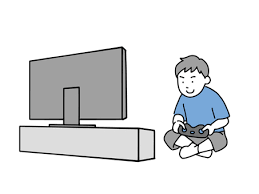

Person 4 - Abdullah Gani
Biography and Background
Abdullah, a 21-year-old Mechanical Engineering student at the University of Pretoria, is passionate about designing innovative solutions, robotics, and problem-solving. With his analytical skills and determination, he constantly pushes himself to excel and bring creative ideas to life.
Hobbies

- Solving complex Rubik’s cube patterns
- Watching sci-fi and supernatural movies and series
- Playing video games
- Playing snooker
Modules
| Modules Semester 1 | Modules Semester 2 |
|---|---|
| CHM 172 - General chemistry 172 | MGC 110 - Graphical communication 110 |
| EBN 111 - Electricity and electronics 111 | NMC 123 - Materials science 123 |
| FSK 116 - Physics 116 | HAS 120 - Humanities and social sciences 120 |